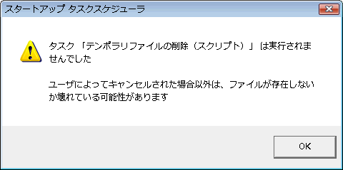

| エラーと対処方法 |
| エラーと対処方法 |
MFC71.DLLとMSVCR71.DLLがWindowsシステムディレクトリ（C:\Windows\System32 など）に存在するか確認してください。これらのファイルが見つからない場合は、MFC71.DLLとMSVCR71.DLLを入手し、sTask.exeと同じフォルダに置いてください。
ｓTask version 1.5で解決したと思っていますが、まだこのメッセージが出る場合は、このバージョンでは解決できません。（Windows95の場合起こりえます）
sTask version 1.5で解決したと思っていますが、まだこのメッセージが出る場合は、このバージョンでは解決できません。
プログラム内部エラーで「実行状況のダイアログ」が表示できません。ファイル メニュー：環境設定で「実行状況のダイアログを表示する」の設定をOFFにするとエラーが回避できる場合があります。

このエラーが表示された場合、タスクの機能設定でファイル名が正しく入力されているか確認してください。
このエラーは、ファイル メニュー：環境設定の「全てのタスクの実行判定結果のダイアログを表示する」をONにしている場合の判定結果表示です。この場合、スケジュールの条件が整うまでタスクは実行されません。
このプログラムは、16色アイコンにしか対応していません。なお、プログラムの実行にはなんら影響はありません。
F1, Shift+F1キーで指定可能な全てのダイアログ要素をヘルプ項目へ割り付けていないため起こります。なお、タスク一覧の各メニュー項目のヘルプ項目割り付けは全く行っていませんのでご了承ください。
HKEY_CURRENT_USER/Software/Microsoft/Windows/CurrentVersion/にrunというキーが存在しない場合にrun内に値を書き込もうとして失敗したときに起きるエラーです。レジストリエディタでrunキーを作成してください。
ファイル メニュー：環境設定の「スタートアップ タスク スケジューラ自体の起動遅延時間」が経過する間、マウスカーソル表示がビジー（Windows XPまでなら砂時計表示、Windows Vista/7では回転円表示）になるのは、遅延時間を得るのに単純なsleep命令を使っているためです。実害は無いと思いますので辛抱願います。